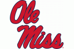
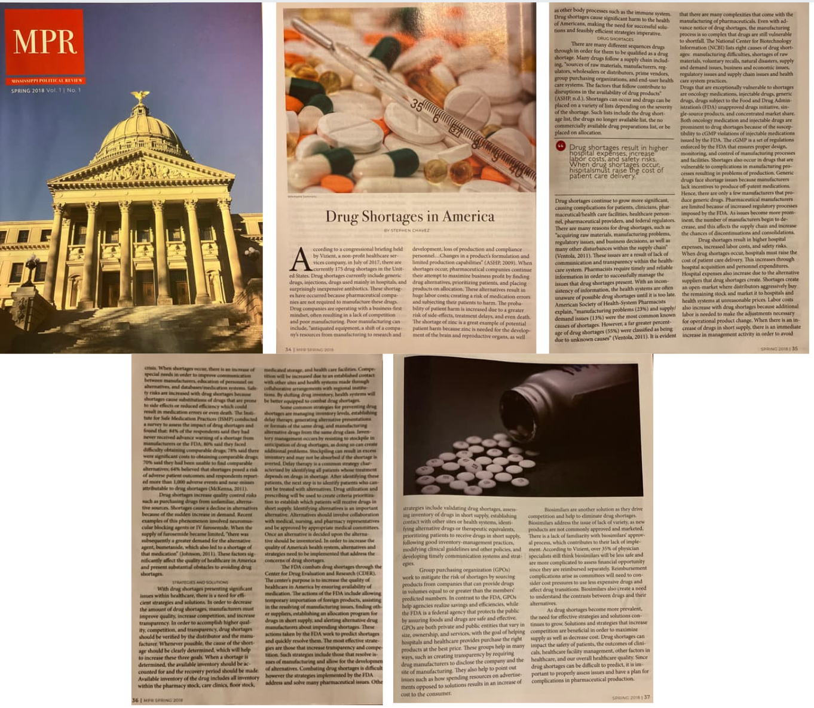
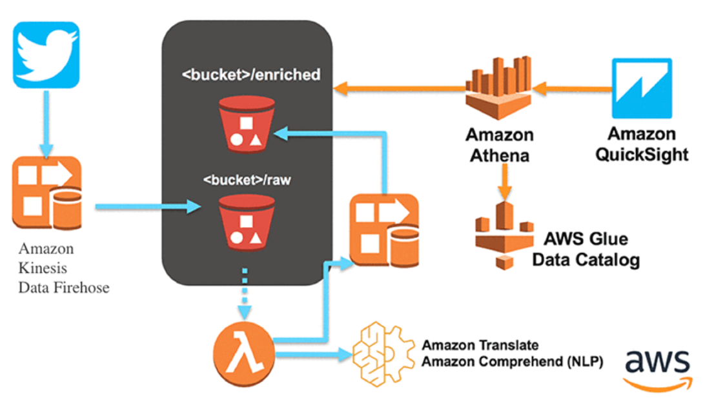

Stephen Chavez's Portfolio
Education
Master of Business Administraction (MBA) | 2021
University of Memphis Memphis, Tennessee
Focus: Web Analytics,
Cum Laude, Chancellor's List/Dean's List

Bachelor of Arts, Public Policy Leadership | 2018
University of Mississippi Oxford, Mississippi
Minor: English,
Cum Laude, Chancellor’s List/Dean’s List, Luckyday Scholar, United States Senate Page.
Experience
Professional, Product Management
Corelogic | Oxford, MS | 2022 - Present
Professional, Business System Analyst
Corelogic | Oxford, MS | 2022
System Analyst
DHL Supply Chain and Logistics | Memphis, TN | 2021 - 2022
Freelance Web Developer
Serving Champions | Hernando, MS | 2020 - 2022
Campaign Manager
Hernando Mayoral Re-Election Campaign | Hernando, MS | 2020 - 2021
Data Director / Deputy Campaign Manager
West Virginia Governor's Campaign | Charleston, WV | 2019 - 2020
Campaign Manager
MS House District 28 Campaign | DeSoto County, MS | 2019 - 2021
College Outreach Coordinator / Regional Political Director
MS Lieutenant Governor Campaign | Northwest, MS | 2019
Data Director/Regional Political Director
MS Secretary of State Campaign | Jackson, MS | 2019
| Coordination & Logistics | Project Management & Support | Strategy & Execution |
| Product Management | Resourse Allocation | Critical Thinking |
| SQL, CSS, HTML5 | Business Process Improvement | Risk Management |
| PowerBI & Tableau | Database Management Systems | Documentation |
| Jira | Microsoft Office | Reporting |
Publications

Drug Shortages in America
Drug Shortages in America
Mississippi Political Review
February 2018
Projects
Here are a couple of videos I created. From compiling video, editing, creating script, and putting the finished project together. I also created the targeted ad group to boost the campaign videos!



Using Twitter API and collecting twitter data, I worked with a partner to collect twitter data and AWS EMR. We searched tweets associated with the 2018 MLB World Series to see if Tweet frequency could be used to predict the winner of the 2018 World Series. We examined the data to confirm its value for analysis and then used Jupyter notebooks, Tableau, sentiment analysis, NLP techniques, and multiple other techniques/strategies to create a PowerPoint presentation and video for the class.

In this project, I analyzed data and created visuals in Tableau to create a presentation to present the data.

As a Campaign Data Director, I was not only in charge of handeling the campaigns data systems but was also responsible for creating reports and tracking campaign staff progress. Below is an example of an Excel sheet I created that would help to track campaign progress and would be shared with candidate, consultant, and other campaign stakeholders.
Certifications
Critical Thinking |
March 2024
CoreLogic
Project Management Foundations |
April 2022
Project Management Institution (PMI)
Google Analytics Individual Qualification |
Completion ID: 74877917
Google Analytics Academy
Advanced Google Analytics |
Google Analytics Academy


{kind=link}
{kind=link}
{kind=link}
{kind=link}
{kind=link}
{kind=link}
{kind=link}
{kind=link}